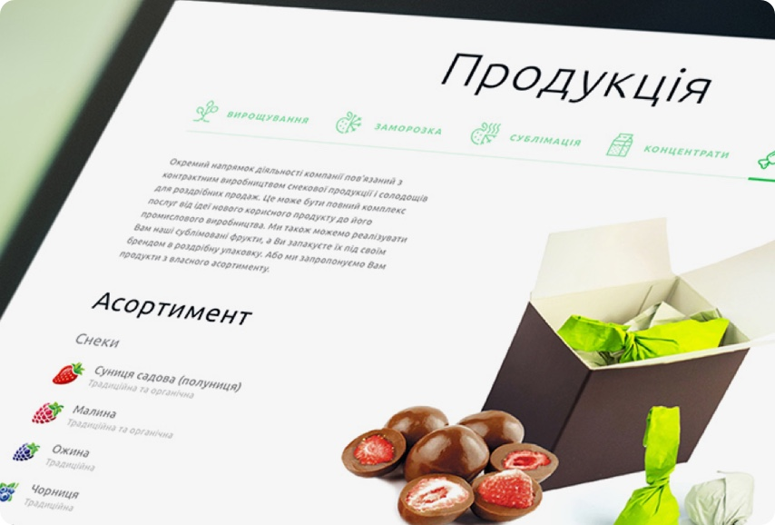
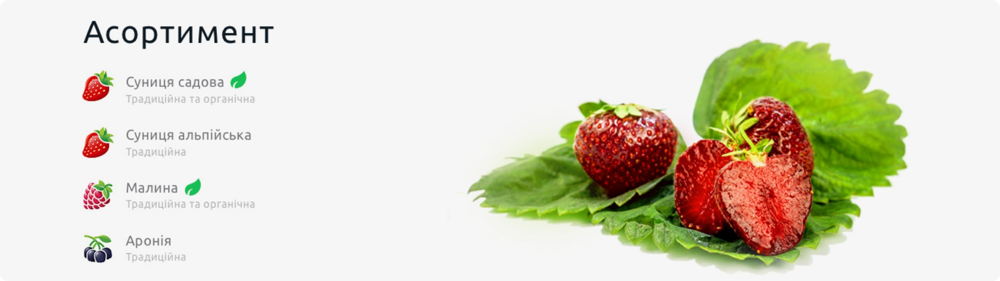

<div class="page" data-barba="container" data-barba-namespace="project">
    <div class="page__content">
        <section class="project">
            <div class="project__header_wrapper">
                <section class="section color_white project__header">
                    <div class="project__header_before"></div>
                    <div class="gobackbtn">
                        <a class="link" href="/"><i class="icon-slider-arrow-left"></i> Go back</a>
                    </div>
                    <div class="project__container">
                        <div class="project__description">
                            <h1 class="section__title">Web & Mobile App Development</h1>
                            <p>Вы основали свой startup и с нетерпением ждете, когда заявите о себе миру? Или уже давно владеете успешным бизнесом, но ему необходим глоток свежего воздуха в виде нового сайта? Вы обратились по адресу. Наши senior-разработчики занимаются:</p>
                        </div>
                        <div class="project__thumbnail">
                            
                        </div>
                    </div>
                </section>
            </div>
        </section>
        <section class="section">
            <div class="project__wrapper">
                <div class="text_image__inline">
                    <div class="image">
                        
                    </div>
                    <div class="text">Вы основали свой startup и с нетерпением ждете, когда заявите о себе миру? Или уже давно владеете успешным бизнесом, но ему необходим глоток свежего воздуха в виде нового сайта? Вы обратились по адресу. Наши senior-разработчики занимаются:</div>
                </div>
            </div>
        </section>
        <section class="section">
            <div class="project__wrapper">
                <div class="text__wrapper">
                    <h2 class="section__title">Какие задачи стояли перед нами?</h2>
                    <p>Вы основали свой startup и с нетерпением ждете, когда заявите о себе миру? Или уже давно владеете успешным бизнесом, но ему необходим глоток свежего воздуха в виде нового сайта? Вы обратились по адресу. Наши senior-разработчики занимаются:</p>
                    <ul>
                        <li>SAAS Development;</li>
                        <li>E-Commerce;</li>
                        <li>Game Development;</li>
                        <li>CRM Development;</li>
                        <li>Brand Presentation.</li>
                    </ul>
                </div>
            </div>
            <div class="project__wrapper_large">
                
            </div>
            <div class="project__wrapper">
                <div class="text__wrapper">
                    <p>Наши PR-эксперты и маркетологи уже готовы взяться за репутацию вашей компании и сделать вас узнаваемым в сети. В зависимости от цели мы разработаем эффективную стратегию. Спустя несколько месяцев пользователи будут делиться вашим аккаунтом в Instagram со словами «Подпишись на них, они крутые!» Мы знаем все о:</p>
                    <p>Наши PR-эксперты и маркетологи уже готовы взяться за репутацию вашей компании и сделать вас узнаваемым в сети. В зависимости от цели мы разработаем эффективную стратегию. Спустя несколько месяцев пользователи будут делиться вашим аккаунтом в Instagram со словами «Подпишись на них, они крутые!» Мы знаем все о:</p>
                    <div class="btn__container">
                        <a href="#" class="btn btn--pink">Let’s talk</a>
                    </div>
                </div>
            </div>
        </section>
    </div>
    {{> footer }}
</div>